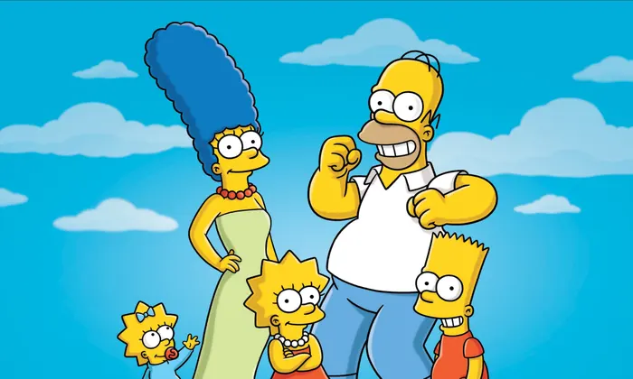

About Homer
Homer is awesome! He's a cartoon character from the tv series the Simpsons. He likes beer and donuts.
Homer and his family
Homer's characteristics
- He eats a lot of donuts
- He works at the brewery
- He loves his family
Homers friends
Homer has some awesome friends. They drink together at Moes Tavern. They are Carl Carlson, Lenny Leonard and Ned. Click on the links below to read more about them: